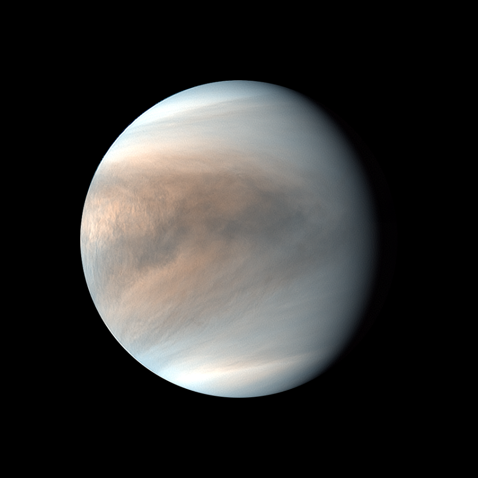
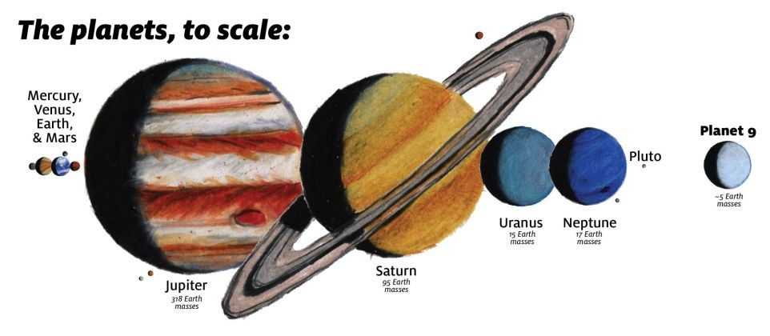

The Sun
The Sun is the star at the center of the Solar System. It is a nearly perfect sphere of hot plasma,heated to incandescence by nuclear fusion reactions in its core, radiating the energy mainly as visible light, ultraviolet light, and infrared radiation. It is by far the most important source of energy for life on Earth. Its diameter is about 1.39 million kilometres (864,000 miles), or 109 times that of Earth. Its mass is about 330,000 times that of Earth; it accounts for about 99.86% of the total mass of the Solar System.Roughly three quarters of the Sun's mass consists of hydrogen (~73%); the rest is mostly helium (~25%), with much smaller quantities of heavier elements, including oxygen, carbon, neon and iron. The Sun is a G-type main-sequence star (G2V) based on its spectral class. As such, it is informally and not completely accurately referred to as a yellow dwarf (its light is closer to white than yellow). It formed approximately 4.6 billion years ago from the gravitational collapse of matter within a region of a large molecular cloud. Most of this matter gathered in the center, whereas the rest flattened into an orbiting disk that became the Solar System. The central mass became so hot and dense that it eventually initiated nuclear fusion in its core. It is thought that almost all stars form by this process. The Sun's core fuses about 600 million tons of hydrogen into helium every second, converting 4 million tons of matter into energy every second as a result. This energy, which can take between 10,000 and 170,000 years to escape the core, is the source of the Sun's light and heat. When hydrogen fusion in its core has diminished to the point at which the Sun is no longer in hydrostatic equilibrium, its core will undergo a marked increase in density and temperature while its outer layers expand, eventually transforming the Sun into a red giant. It is calculated that the Sun will become sufficiently large to engulf the current orbits of Mercury and Venus, and render Earth uninhabitable – but not for about five billion years. After this, it will shed its outer layers and become a dense type of cooling star known as a white dwarf, and no longer produce energy by fusion, but still glow and give off heat from its previous fusion.
The Mercury
 Mercury is the smallest planet in the Solar System and the closest to the Sun. Its orbit around the Sun takes 87.97 Earth days, the shortest of all the Sun's planets. It is named after the Roman god Mercurius (Mercury), god of commerce, messenger of the gods, and mediator between gods and mortals, corresponding to the Greek god Hermes (Ἑρμῆς). Like Venus, Mercury orbits the Sun within Earth's orbit as an inferior planet, and its apparent distance from the Sun as viewed from Earth never exceeds 28°. This proximity to the Sun means the planet can only be seen near the western horizon after sunset or the eastern horizon before sunrise, usually in twilight. At this time, it may appear as a bright star-like object but is often far more difficult to observe than Venus. From Earth, the planet telescopically displays the complete range of phases, similar to Venus and the Moon, which recurs over its synodic period of approximately 116 days.
Mercury is the smallest planet in the Solar System and the closest to the Sun. Its orbit around the Sun takes 87.97 Earth days, the shortest of all the Sun's planets. It is named after the Roman god Mercurius (Mercury), god of commerce, messenger of the gods, and mediator between gods and mortals, corresponding to the Greek god Hermes (Ἑρμῆς). Like Venus, Mercury orbits the Sun within Earth's orbit as an inferior planet, and its apparent distance from the Sun as viewed from Earth never exceeds 28°. This proximity to the Sun means the planet can only be seen near the western horizon after sunset or the eastern horizon before sunrise, usually in twilight. At this time, it may appear as a bright star-like object but is often far more difficult to observe than Venus. From Earth, the planet telescopically displays the complete range of phases, similar to Venus and the Moon, which recurs over its synodic period of approximately 116 days.
The Venus

he second planet from the sun, Venus is Earth's twin in size. Radar images beneath its atmosphere reveal that its surface has various mountains and volcanoes. But beyond that, the two planets couldn't be more different. Because of its thick, toxic atmosphere that's made of sulfuric acid clouds, Venus is an extreme example of the greenhouse effect. It's scorching-hot, even hotter than Mercury. The average temperature on Venus' surface is 900 F (465 C). At 92 bar, the pressure at the surface would crush and kill you. And oddly, Venus spins slowly from east to west, the opposite direction of most of the other planets.
The Greeks believed Venus was two different objects — one in the morning sky and another in the evening. Because it is often brighter than any other object in the sky, Venus has generated many UFO reports.
Discovery: Known to the ancient Greeks and visible to the naked eye
Named for the Roman goddess of love and beauty
Diameter: 7,521 miles (12,104 km)
Orbit: 225 Earth days
Day: 241 Earth days
Earth (Blessed one)
 Earth is the third planet from the Sun and the only astronomical object known to harbour and support life. About 29.2% of Earth's surface is land consisting of continents and islands. The remaining 70.8% is covered with water, mostly by oceans, seas, gulfs, and other salt-water bodies, but also by lakes, rivers, and other freshwater, which together constitute the hydrosphere. Much of Earth's polar regions are covered in ice. Earth's outer layer is divided into several rigid tectonic plates that migrate across the surface over many millions of years, while its interior remains active with a solid iron inner core, a liquid outer core that generates Earth's magnetic field, and a convective mantle that drives plate tectonics.
Earth's atmosphere consists mostly of nitrogen and oxygen. More solar energy is received by tropical regions than polar regions and is redistributed by atmospheric and ocean circulation. Greenhouse gases also play an important role in regulating the surface temperature. A region's climate is not only determined by latitude, but also by elevation and proximity to moderating oceans, among other factors. Severe weather, such as tropical cyclones, thunderstorms, and heatwaves, occurs in most areas and greatly impacts life.
Earth's gravity interacts with other objects in space, especially the Moon, which is Earth's only natural satellite. Earth orbits around the Sun in about 365.25 days. Earth's axis of rotation is tilted with respect to its orbital plane, producing seasons on Earth. The gravitational interaction between Earth and the Moon causes tides, stabilizes Earth's orientation on its axis, and gradually slows its rotation. Earth is the densest planet in the Solar System and the largest and most massive of the four rocky planets.
According to radiometric dating estimation and other evidence, Earth formed over 4.5 billion years ago. Within the first billion years of Earth's history, life appeared in the oceans and began to affect Earth's atmosphere and surface, leading to the proliferation of anaerobic and, later, aerobic organisms. Some geological evidence indicates that life may have arisen as early as 4.1 billion years ago. Since then, the combination of Earth's distance from the Sun, physical properties, and geological history have allowed life to evolve and thrive. In the history of life on Earth, biodiversity has gone through long periods of expansion, occasionally punctuated by mass extinctions. More than 99% of all species that ever lived on Earth are extinct. Almost 8 billion humans live on Earth and depend on its biosphere and natural resources for their survival. Humans increasingly impact Earth's surface, hydrology, atmospheric processes, and other life.
Earth is the third planet from the Sun and the only astronomical object known to harbour and support life. About 29.2% of Earth's surface is land consisting of continents and islands. The remaining 70.8% is covered with water, mostly by oceans, seas, gulfs, and other salt-water bodies, but also by lakes, rivers, and other freshwater, which together constitute the hydrosphere. Much of Earth's polar regions are covered in ice. Earth's outer layer is divided into several rigid tectonic plates that migrate across the surface over many millions of years, while its interior remains active with a solid iron inner core, a liquid outer core that generates Earth's magnetic field, and a convective mantle that drives plate tectonics.
Earth's atmosphere consists mostly of nitrogen and oxygen. More solar energy is received by tropical regions than polar regions and is redistributed by atmospheric and ocean circulation. Greenhouse gases also play an important role in regulating the surface temperature. A region's climate is not only determined by latitude, but also by elevation and proximity to moderating oceans, among other factors. Severe weather, such as tropical cyclones, thunderstorms, and heatwaves, occurs in most areas and greatly impacts life.
Earth's gravity interacts with other objects in space, especially the Moon, which is Earth's only natural satellite. Earth orbits around the Sun in about 365.25 days. Earth's axis of rotation is tilted with respect to its orbital plane, producing seasons on Earth. The gravitational interaction between Earth and the Moon causes tides, stabilizes Earth's orientation on its axis, and gradually slows its rotation. Earth is the densest planet in the Solar System and the largest and most massive of the four rocky planets.
According to radiometric dating estimation and other evidence, Earth formed over 4.5 billion years ago. Within the first billion years of Earth's history, life appeared in the oceans and began to affect Earth's atmosphere and surface, leading to the proliferation of anaerobic and, later, aerobic organisms. Some geological evidence indicates that life may have arisen as early as 4.1 billion years ago. Since then, the combination of Earth's distance from the Sun, physical properties, and geological history have allowed life to evolve and thrive. In the history of life on Earth, biodiversity has gone through long periods of expansion, occasionally punctuated by mass extinctions. More than 99% of all species that ever lived on Earth are extinct. Almost 8 billion humans live on Earth and depend on its biosphere and natural resources for their survival. Humans increasingly impact Earth's surface, hydrology, atmospheric processes, and other life.
The Moon (Natural satellite)
 The Moon is Earth's only natural satellite. At about one-quarter the diameter of Earth (comparable to the width of Australia),it is the largest natural satellite in the Solar System relative to the size of its planet,the fifth largest satellite in the Solar System overall, and is larger than any known dwarf planet. Orbiting Earth at an average distance of 384,400 km (238,900 mi),or about 30 times Earth's diameter, its gravitational influence slightly lengthens Earth's day and is the main driver of Earth's tides. The Moon is classified as a planetary-mass object and a differentiated rocky body, and lacks any significant atmosphere, hydrosphere, or magnetic field. Its surface gravity is about one-sixth of Earth's (0.1654 g); Jupiter's moon Io is the only satellite in the Solar System known to have a higher surface gravity and density.
The Moon's orbit around Earth has a sidereal period of 27.3 days. During each synodic period of 29.5 days, the amount of visible surface illuminated by the Sun varies from none up to 100%, resulting in lunar phases that form the basis for the months of a lunar calendar. The Moon is tidally locked to Earth, which means that the length of a full rotation of the Moon on its own axis causes its same side (the near side) to always face Earth, and the somewhat longer lunar day is the same as the synodic period. That said, 59% of the total lunar surface can be seen from Earth through shifts in perspective due to libration.
The most widely accepted origin explanation posits that the Moon formed about 4.51 billion years ago, not long after Earth, out of the debris from a giant impact between the planet and a hypothesized Mars-sized body called Theia. It then receded to a wider orbit because of tidal interaction with the Earth. The near side of the Moon is marked by dark volcanic maria ("seas"), which fill the spaces between bright ancient crustal highlands and prominent impact craters. Most of the large impact basins and mare surfaces were in place by the end of the Imbrian period, some three billion years ago. The lunar surface is relatively non-reflective, with a reflectance just slightly brighter than that of worn asphalt. However, because it has a large angular diameter, the full moon is the brightest celestial object in the night sky. The Moon's apparent size is nearly the same as that of the Sun, allowing it to cover the Sun almost completely during a total solar eclipse.
The Moon is Earth's only natural satellite. At about one-quarter the diameter of Earth (comparable to the width of Australia),it is the largest natural satellite in the Solar System relative to the size of its planet,the fifth largest satellite in the Solar System overall, and is larger than any known dwarf planet. Orbiting Earth at an average distance of 384,400 km (238,900 mi),or about 30 times Earth's diameter, its gravitational influence slightly lengthens Earth's day and is the main driver of Earth's tides. The Moon is classified as a planetary-mass object and a differentiated rocky body, and lacks any significant atmosphere, hydrosphere, or magnetic field. Its surface gravity is about one-sixth of Earth's (0.1654 g); Jupiter's moon Io is the only satellite in the Solar System known to have a higher surface gravity and density.
The Moon's orbit around Earth has a sidereal period of 27.3 days. During each synodic period of 29.5 days, the amount of visible surface illuminated by the Sun varies from none up to 100%, resulting in lunar phases that form the basis for the months of a lunar calendar. The Moon is tidally locked to Earth, which means that the length of a full rotation of the Moon on its own axis causes its same side (the near side) to always face Earth, and the somewhat longer lunar day is the same as the synodic period. That said, 59% of the total lunar surface can be seen from Earth through shifts in perspective due to libration.
The most widely accepted origin explanation posits that the Moon formed about 4.51 billion years ago, not long after Earth, out of the debris from a giant impact between the planet and a hypothesized Mars-sized body called Theia. It then receded to a wider orbit because of tidal interaction with the Earth. The near side of the Moon is marked by dark volcanic maria ("seas"), which fill the spaces between bright ancient crustal highlands and prominent impact craters. Most of the large impact basins and mare surfaces were in place by the end of the Imbrian period, some three billion years ago. The lunar surface is relatively non-reflective, with a reflectance just slightly brighter than that of worn asphalt. However, because it has a large angular diameter, the full moon is the brightest celestial object in the night sky. The Moon's apparent size is nearly the same as that of the Sun, allowing it to cover the Sun almost completely during a total solar eclipse.
The asteroid belt
The asteroid belt is a torus-shaped region in the Solar System, located roughly between the orbits of the planets Jupiter and Mars. It contains a great many solid, irregularly shaped bodies, of many sizes but much smaller than planets, called asteroids or minor planets. This asteroid belt is also called the main asteroid belt or main belt to distinguish it from other asteroid populations in the Solar System such as near-Earth asteroids and trojan asteroids. The asteroid belt is the smallest and innermost known circumstellar disc in the Solar System. About half its mass is contained in the four largest asteroids: Ceres, Vesta, Pallas, and Hygiea.The total mass of the asteroid belt is approximately 4% that of the Moon. Ceres, the only object in the asteroid belt large enough to be a dwarf planet, is about 950 km in diameter, whereas Vesta, Pallas, and Hygiea have mean diameters of less than 600 km.The remaining bodies range down to the size of a dust particle. The asteroid material is so thinly distributed that numerous unmanned spacecraft have traversed it without incident.Nonetheless, collisions between large asteroids do occur, and these can produce an asteroid family whose members have similar orbital characteristics and compositions. Individual asteroids within the asteroid belt are categorized by their spectra, with most falling into three basic groups: carbonaceous (C-type), silicate (S-type), and metal-rich (M-type). The asteroid belt formed from the primordial solar nebula as a group of planetesimals.Planetesimals are the smaller precursors of the protoplanets. Between Mars and Jupiter, however, gravitational perturbations from Jupiter imbued the protoplanets with too much orbital energy for them to accrete into a planet.Collisions became too violent, and instead of fusing together, the planetesimals and most of the protoplanets shattered. As a result, 99.9% of the asteroid belt's original mass was lost in the first 100 million years of the Solar System's history.Some fragments eventually found their way into the inner Solar System, leading to meteorite impacts with the inner planets. Asteroid orbits continue to be appreciably perturbed whenever their period of revolution about the Sun forms an orbital resonance with Jupiter. At these orbital distances, a Kirkwood gap occurs as they are swept into other orbits. Classes of small Solar System bodies in other regions are the near-Earth objects, the centaurs, the Kuiper belt objects, the scattered disc objects, the sednoids, and the Oort cloud objects. On 22 January 2014, ESA scientists reported the detection, for the first definitive time, of water vapor on Ceres, the largest object in the asteroid belt.The detection was made by using the far-infrared abilities of the Herschel Space Observatory.he finding was unexpected because comets, not asteroids, are typically considered to "sprout jets and plumes". According to one of the scientists, "The lines are becoming more and more blurred between comets and asteroids".
The Mars (Hope)
 The fourth planet from the sun is Mars, and it's a cold, desert-like place covered in dust. This dust is made of iron oxides, giving the planet its iconic red hue. Mars shares similarities with Earth: It is rocky, has mountains, valleys and canyons, and storm systems ranging from localized tornado-like dust devils to planet-engulfing dust storms.
Substantial scientific evidence suggests that Mars at one point billions of years ago was a much warmer, wetter world. Rivers and maybe even oceans existed. Although Mars' atmosphere is too thin for liquid water to exist on the surface for any length of time, remnants of that wetter Mars still exist today. Sheets of water ice the size of California lie beneath Mars' surface, and at both poles are ice caps made in part of frozen water. In July 2018, scientists revealed that they had found evidence of a liquid lake beneath the surface of the southern pole's ice cap. It's the first example of a persistent body of water on the Red Planet.
Scientists also think ancient Mars would have had the conditions to support life like bacteria and other microbes. Hope that signs of this past life — and the possibility of even current lifeforms — may exist on the Red Planet has driven numerous space exploration missions and Mars is now one of the most explored planets in the solar system.
Discovery: Known to the ancient Greeks and visible to the naked eye
Named for the Roman god of war
Diameter: 4,217 miles (6,787 km)
Orbit: 687 Earth days
Day: Just more than one Earth day (24 hours, 37 minutes
The fourth planet from the sun is Mars, and it's a cold, desert-like place covered in dust. This dust is made of iron oxides, giving the planet its iconic red hue. Mars shares similarities with Earth: It is rocky, has mountains, valleys and canyons, and storm systems ranging from localized tornado-like dust devils to planet-engulfing dust storms.
Substantial scientific evidence suggests that Mars at one point billions of years ago was a much warmer, wetter world. Rivers and maybe even oceans existed. Although Mars' atmosphere is too thin for liquid water to exist on the surface for any length of time, remnants of that wetter Mars still exist today. Sheets of water ice the size of California lie beneath Mars' surface, and at both poles are ice caps made in part of frozen water. In July 2018, scientists revealed that they had found evidence of a liquid lake beneath the surface of the southern pole's ice cap. It's the first example of a persistent body of water on the Red Planet.
Scientists also think ancient Mars would have had the conditions to support life like bacteria and other microbes. Hope that signs of this past life — and the possibility of even current lifeforms — may exist on the Red Planet has driven numerous space exploration missions and Mars is now one of the most explored planets in the solar system.
Discovery: Known to the ancient Greeks and visible to the naked eye
Named for the Roman god of war
Diameter: 4,217 miles (6,787 km)
Orbit: 687 Earth days
Day: Just more than one Earth day (24 hours, 37 minutes
Jupiter
The fifth planet from the sun, Jupiter is a giant gas world that is the most massive planet in our solar system — more than twice as massive as all the other planets combined, according to NASA. Its swirling clouds are colorful due to different types of trace gases. And a major feature in its swirling clouds is the Great Red Spot, a giant storm more than 10,000 miles wide. It has raged at more than 400 mph for the last 150 years, at least. Jupiter has a strong magnetic field, and with 75 moons, it looks a bit like a miniature solar system. Discovery: Known to the ancient Greeks and visible to the naked eye Named for the ruler of the Roman gods Diameter: 86,881 miles (139,822 km) Orbit: 11.9 Earth years Day: 9.8 Earth hours
The Saturn
The sixth planet from the sun, Saturn is known most for its rings. When polymath Galileo Galilei first studied Saturn in the early 1600s, he thought it was an object with three parts: a planet and two large moons on either side. Not knowing he was seeing a planet with rings, the stumped astronomer entered a small drawing — a symbol with one large circle and two smaller ones — in his notebook, as a noun in a sentence describing his discovery. More than 40 years later, Christiaan Huygens proposed that they were rings. The rings are made of ice and rock and scientists are not yet sure how they formed. The gaseous planet is mostly hydrogen and helium and has numerous moons. Discovery: Known to the ancient Greeks and visible to the naked eye Named for Roman god of agriculture Diameter: 74,900 miles (120,500 km) Orbit: 29.5 Earth years Day: About 10.5 Earth hours
Uranus
The seventh planet from the sun, Uranus is an oddball. It has clouds made of hydrogen sulfide, the same chemical that makes rotten eggs smell so foul. It rotates from east to west like Venus. But unlike Venus or any other planet, its equator is nearly at right angles to its orbit — it basically orbits on its side. Astronomers believe an object twice the size of Earth collided with Uranus roughly 4 billion years ago, causing Uranus to tilt. That tilt causes extreme seasons that last 20-plus years, and the sun beats down on one pole or the other for 84 Earth-years at a time. The collision is also thought to have knocked rock and ice into Uranus' orbit. These later became some of the planet's 27 moons. Methane in the atmosphere gives Uranus its blue-green tint. It also has 13 sets of faint rings. Discovery: 1781 by William Herschel (was originally thought to be a star) Named for the personification of heaven in ancient myth Diameter: 31,763 miles (51,120 km) Orbit: 84 Earth years Day: 18 Earth hours
Neptune
 The eighth planet from the sun, Neptune is about the size of Uranus and is known for supersonic strong winds. Neptune is far out and cold. The planet is more than 30 times as far from the sun as Earth. Neptune was the first planet predicted to exist by using math, before it was visually detected. Irregularities in the orbit of Uranus led French astronomer Alexis Bouvard to suggest some other planet might be exerting a gravitational tug. German astronomer Johann Galle used calculations to help find Neptune in a telescope. Neptune is about 17 times as massive as Earth and has a rocky core.
Discovery: 1846
Named for the Roman god of water
Diameter: 30,775 miles (49,530 km)
Orbit: 165 Earth years
Day: 19 Earth hours
The eighth planet from the sun, Neptune is about the size of Uranus and is known for supersonic strong winds. Neptune is far out and cold. The planet is more than 30 times as far from the sun as Earth. Neptune was the first planet predicted to exist by using math, before it was visually detected. Irregularities in the orbit of Uranus led French astronomer Alexis Bouvard to suggest some other planet might be exerting a gravitational tug. German astronomer Johann Galle used calculations to help find Neptune in a telescope. Neptune is about 17 times as massive as Earth and has a rocky core.
Discovery: 1846
Named for the Roman god of water
Diameter: 30,775 miles (49,530 km)
Orbit: 165 Earth years
Day: 19 Earth hours
Pluto (The Dwarf)
Once the ninth planet from the sun, Pluto is unlike other planets in many respects. It is smaller than Earth's moon; its orbit is highly elliptical, falling inside Neptune's orbit at some points and far beyond it at others; and Pluto's orbit doesn't fall on the same plane as all the other planets — instead, it orbits 17.1 degrees above or below. From 1979 until early 1999, Pluto had actually been the eighth planet from the sun. Then, on Feb. 11, 1999, it crossed Neptune's path and once again became the solar system's most distant planet — until it was redefined as a dwarf planet. It's a cold, rocky world with a tenuous atmosphere. Scientists thought it might be nothing more than a hunk of rock on the outskirts of the solar system. But when NASA's New Horizons mission performed history's first flyby of the Pluto system on July 14, 2015, it transformed scientists' view of Pluto. Pluto is a very active ice world that's covered in glaciers, mountains of ice water, icy dunes and possibly even cryovolcanoes that erupt icy lava made of water, methane or ammonia. Discovery: 1930 by Clyde Tombaugh Named for the Roman god of the underworld, Hades Diameter: 1,430 miles (2,301 km) Orbit: 248 Earth years Day: 6.4 Earth day
Possible Nine
Scientists announced the discovery of a potential "Planet Nine" in our solar system on Jan. 20, 2016. See images of this strange giant world in our neighborhood here. THIS IMAGE: An artist's depiction of Planet Nine as envisioned by scientists. The Planet Nine evidence points to a giant planet with the mass of 10 Earths in the deep Kuiper Belt. Its orbit is about 20 times farther from the sun than that of Neptune. The evidence for Planet Nine was unveiled by Caltech scientists Mike Brown (at left, a prolific Kuiper Belt object hunter) and Konstantin Batygin. The duo used mathematical models and computer simulations to map out Planet Nine's orbit after spotting a strange alignment in the orbits of six other Kuiper Belt objects.
Scale of planets

We are Working on our content Please be Patience and send feedback !